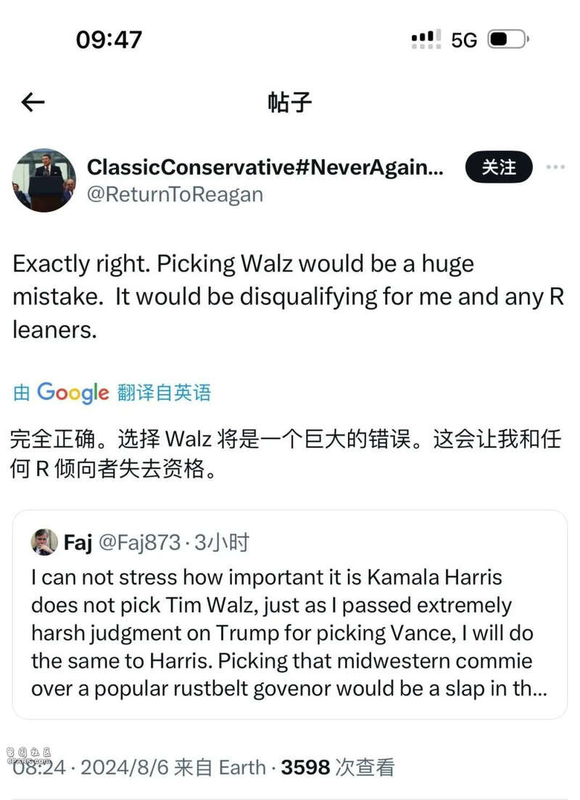
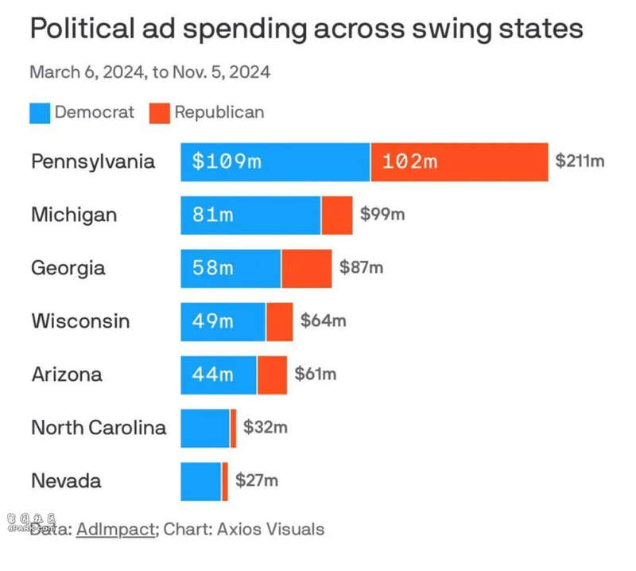

北京时间8月6日晚上十点左右，美国民主党总统候选人哈里斯选择了明尼苏达州州长沃尔兹（Walz）作为其副手，这就使得悬而未决已久的民主党竞选副手争夺战落下帷幕。
尽管民主党人为沃尔兹在一众竞选者中脱颖而出提供了各种理由，但实际上，这些都掩盖不了沃尔兹作为哈里斯副手的巨大弱点——这些弱点让民主党本已处于优势的选举战争面临新的重大危险。
事实上，作为参加过2020年民主党内总统初选的副总统，哈里斯身上具有很多难以掩饰的弱点：
譬如她在边境非法移民问题上很少作为，而且说过很多宽纵非法移民的讲话，这些观点在当前美国极不受欢迎；
在国内治安问题上哈里斯曾多次要求削弱警察的经费，不关心城市治安问题等等
这些事项都是当前美国中间选民极为重视的议题，是此次选举的关键挑战，但哈里斯在此类议题上的糟糕记录很难取信选民。
在这种情况下，哈里斯与特朗普一样，为了安抚中间选民，她必须尽可能地寻找一位在这些议题上有所作为，至少是没有糟糕记录的民主党人作为竞选搭档来中争取中间选民的信任。
然而，沃尔兹在这些问题上的记录恐怕比哈里斯还要糟糕。
要知道，面对边境非法移民的涌入，沃尔兹曾经公开在电视台上质疑美国的限制举措，他甚至扬言要投资一家梯子公司来帮助这些非法移民越过边境。这些话在当时的美国社会还能争取一些选民，但现在随着美国社会对非法移民越来越反感，这种表述在当前简直就是灾难。
另外，对于治安问题，沃尔兹更是糟糕，2020年弗洛伊德案件发生后，明尼苏达发生大规模暴乱，当时的州长沃尔兹拒绝强力镇压，结果导致该州发生灾难性的损失，事后沃尔兹也后悔自己行动太慢——原因就在于沃尔兹对待“黑人命也是命”的运动过于犹豫，可能是怀有争取其选票的政治企图。这种执政记录几乎就是一种灾难——尤其是对于那些重视治安问题的美国中间派选民更是如此。
这些行为，实际上使得沃尔兹不仅仅很难对哈里斯的弱点有所弥补，更会放大这些议题的挑战性。
要知道，2016年大选中，特朗普获得大量支持最重要的政治议题就是两个：
第一，治安；
第二，边境；
现在，哈里斯最大的弱点也是这两个，哈里斯选择沃尔兹担任其副手，反而只会进一步加剧了这两个弱点。
接下来，一个可见的事态是容易预料到的，特朗普阵营将会不可避免地抓住哈里斯团队这些不可弥补的重大弱点，并向嗜血的鲨鱼般朝着这个方向猛烈撕咬，由此鼓动民众的恐慌和厌恶，并寻求扭转局势的机会。
另外，一个重大政治后果也是不可避免的——由于看不到可以交流的民主党温和派在这种执政团队中的重要位置，哈里斯阵营筹建包括中间选民及共和党温和选民的反对特朗普政治大联盟之机会将大大降低，就像很多反对特朗普并试图支持哈里斯的共和党人所说的那样，“这是一个让他们倍感失望的决策。”

对于这个选择，一个共和党分析师这样评价道，“如果哈里斯选择了夏皮罗，那么特朗普注定只能滚回佛罗里达的海湖庄园安度晚年了，但她选择了沃尔兹，那么特朗普又可以重新找到反击的机会，接下来，局面变得复杂了。”
据美国媒体披露，哈里斯之所以最终选择了沃尔兹，乃是美国前总统、民主党大佬奥巴马的影响所致（佩洛西也支持沃尔兹），但对于这一点，美国政治观察家John Podhoretz不无幽默地嘲讽道：
“别忘了，奥巴马看人的政治直觉历来很糟糕，除了看他自己”。
总之，温和派夏皮罗的退出与激进派沃尔兹的登场，不仅让宾夕法尼亚的归属再次扑朔迷离，也让中间选民再次难以抉择，更也意味着——这场大选再次有了悬念。
由于哈里斯的礼物，特朗普，还有机会。

大选决胜的关键——宾夕法尼亚州，两党争夺的重中之重，乃是绝大多数竞选经费的燃烧之地，如果哈里斯选择了温和派夏皮罗，那么宾夕法尼亚就不再有悬念，遗憾的是她没有。